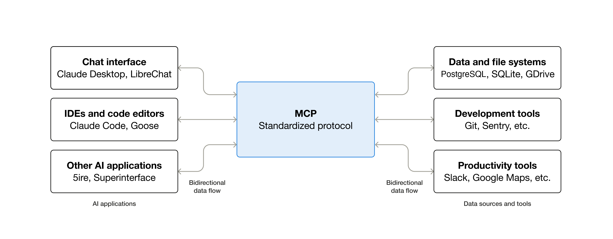
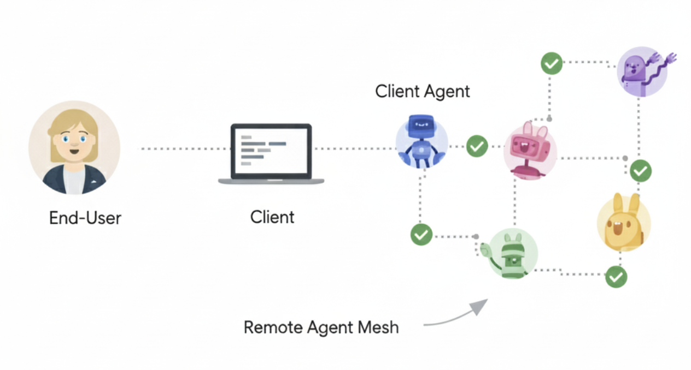
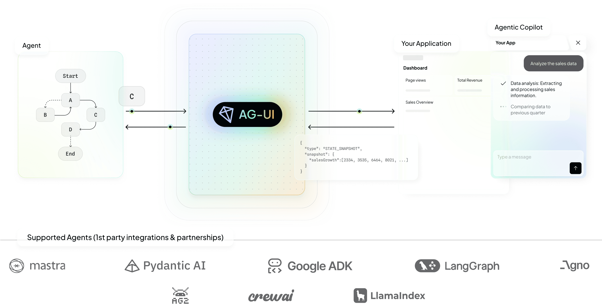

Devfest Milano 2026 · 10 October 2026 · Stefano Maestri · Alessio Soldano
who we are
Two people who ship agents
Stefano MaestriSoftware & AI engineering manager A2A technical steering committee, Linux Foundation podcaster & blogger about AI
Alessio SoldanoSoftware engineer & manager RESTEasy · WildFly · Apache CXF · Quarkus exploring generative AI in software development
Why this talk: our agents already need to talk to other people's agents, tools and users.
history · part 1
Every revolution standardized how things talk
Before TCP/IP → networks spoke dialects
Before HTTP → every service invented its own wire format
Before REST → SOAP was the only "enterprise" answer
Before WebSockets →polling everywhere
Each time, entropy was reduced not by better applications,
but by agreeing on how things connect.
history · part 2
History's rule
TCP/IP vs OSI · CORBA vs REST · SOAP vs JSON · WebSockets vs polling
Winners are rarely the most feature-rich.
The simplest protocol that reduces the most uncertainty wins.
the map · anchor slide
Seven boundaries, plus one
ModelsOpen Responses
ToolsMCP
Other agentsA2A
UsersAG-UI · A2UI
▼
AGENT
▼
KnowledgeAGENTS.md · Skills · Plugins
OperationsOTel GenAI
IDEACP
Paymentsx402
One contract per boundary, composed independently ·
map after Bilgin Ibryam, The Generative Programmer (2026) · payments added
new
boundary 1 · the model
Open Responses
De facto: Chat Completions semantics — the lingua franca spoken by
clients, gateways, providers
Next: Responses API — typed items, semantic streaming events, state
across turns (agent-native, not chat-shaped)
Open Responses: the same contract as an open spec — initiated by OpenAI,
built with the OSS community (Hugging Face); an IETF draft for multi-provider inference
uses it as reference
Already real: Vercel AI SDK ships an Open Responses provider
≈ POSIX for model APIs — one contract, many kernels, portable apps
emerging
boundary 2 · tools
MCP

diagram: modelcontextprotocol.io
Official analogy: USB-C for AI applications — one port, any peripheral
JSON-RPC 2.0 over stdio or Streamable HTTP; host (owns model + user)
→ client (1:1) → server (capabilities)
Three primitives, three controllers: tools (model decides) ·
resources (app decides) · prompts (user decides)
The N×M integration problem becomes N+M: one adapter, every agent × every tool
Ecosystem is the moat: Claude, ChatGPT, VS Code, Cursor already speak it
Extensions: MCP Apps (sandboxed HTML), Skills over MCP (in development)
≈ JDBC/ODBC for the agent era — one driver API, any database behind it
de facto standard
boundary 3 · other agents
A2A

diagram: a2a-protocol.org (Linux Foundation)
The problem it kills: without a standard, every agent pair is a bespoke
point-to-point integration (official scenario: a travel planner delegating to flight,
hotel, currency agents)
Built on what exists: HTTP, JSON-RPC, SSE — design principle #1 is reusing the
web's standards
Opaque execution: no model, tools or memory exposed — you negotiate
with a peer, not inspect a tool
≈ Agent Card = OpenAPI for agents · Tasks = message-queue jobs (states, acks, retry)
1.0 stable
the concrete architecture
MCP and A2A in the same system
My agent
── MCP ──▶
My toolsMCP server · capability access
My agent
── A2A ──▶
Partner agentoutcome delegation
···▶
own model · own tools · own contextopaque execution
MCP: capability access — my agent calls your tools.
A2A: outcome delegation — your agent keeps its stack private.
Why not wrap agents as tools? Agents are not tools — wrapping
amputates negotiation, planning, asking back.
Rule of thumb: stateless capability → MCP · autonomous counterpart
with its own state → A2A.
boundary 4 · users
Three names, one boundary

diagram: docs.ag-ui.com (CopilotKit)
Why request/response dies here: runs are long-running with
intermediate output, nondeterministic (the agent decides what to
render next), mix structured + unstructured IO, need human-in-the-loop
AG-UI = typed event vocabulary (run lifecycle, messages, tool calls,
STATE_SNAPSHOT/DELTA) over plain HTTP/SSE/WebSocket —
transport- and framework-agnostic (LangGraph, CrewAI, ADK, Pydantic AI speak it)
Human-in-the-loop as a first-class event: pause for approval or
credentials, resume later
A2UI = declarative UI: component descriptions from a
client-owned catalogue → native widgets; the client never executes
agent code
Composable: an A2UI payload rides over AG-UI or A2A · MCP Apps =
same idea (sandboxed iframe) on the MCP side
≈ A2UI re-discovers HTML's contract: markup from the server, rendering owned by the client · AG-UI ≈ EventSource/MQTT: a standardized event stream
AG-UI: draftA2UI: 0.9.1
boundary 5 · knowledge & instructions
Knowledge rides the filesystem
AGENTS.md: repo convention, narrows as you descend — ≈ robots.txt for repos
Agent Skills: a folder with SKILL.md + scripts and
references; progressive disclosure (discover the name → load the instructions → execute)
— ≈ man pages: synopsis always loaded, full page on demand
OpenTelemetry GenAI: one trace across model calls, tools, agents —
≈ the OTel you already run: new gen_ai.* conventions next to
http.* and db.* — status Development
boundary 6 · the ide — kept short on purpose
ACP
JSON-RPC between code editor and coding agent: init, sessions,
prompt/progress, permissions, cancel
v1 stablev2 experimental
The LSP parallel — and where it stops: agents are stateful and act
with authority
the newest boundary · payments
The boundary nobody used for 30 years
HTTP 402 "Payment Required": reserved in the protocol since
1996, never put to use.
The old world — 5 frictions
create account
KYC + payment method
buy credits
manage API keys
pay and reconcile
The x402 way — 3 steps
request
402 + terms (scheme, asset, amount, payTo)
pay and retry with proof → 200
Keyless, per-call, machine-speed · zero protocol fees · blockchain-agnostic
(EVM + Solana) · extensible to traditional rails · Linux Foundation project, audited,
millions of transactions
≈ TLS made security a transport feature; x402 makes payment one — same shape as the 401 flow you know: challenge → retry, but the credential is money
production claims
what to adopt today
The bets
Contract
Boundary
Status
Bet
MCP
tools
de facto standard
now
A2A 1.0
agents
stable
now
ACP v1
IDE
stable
now (IDE-scoped)
AGENTS.md
knowledge
convention, zero runtime
now
Agent Skills
knowledge
open spec, wide support
now
Open Responses
model
emerging
pin
OTel GenAI
operations
Development
pin
AG-UI
users
unratified 1.0 draft
pin
A2UI
users
0.9.1, 1.0 candidate
pin
Agent Plugins 1.0.0
knowledge
spec published
pin (portability unproven)
x402
payments
production claims
pin
Adopt one boundary when you need to replace what sits on the other side
without rewriting your agent. Not before.
takeaways
Three sentences to take home
1 · Standards arrive one boundary at a time, not as a platform.
2 · Complement, don't compete: MCP and A2A side by side,
each doing what it does best.
3 · Adopt where the pain is — the simplest protocol that reduces the
most uncertainty wins.
Based on Bilgin Ibryam, The Emerging Standards Behind AI Agents
(The Generative Programmer, Sept 2026) · x402.org · agentskills.io · agent-plugins.org
discussion
Grazie — questions?
Ask us about: the architecture slide · x402 · what we would adopt tomorrow